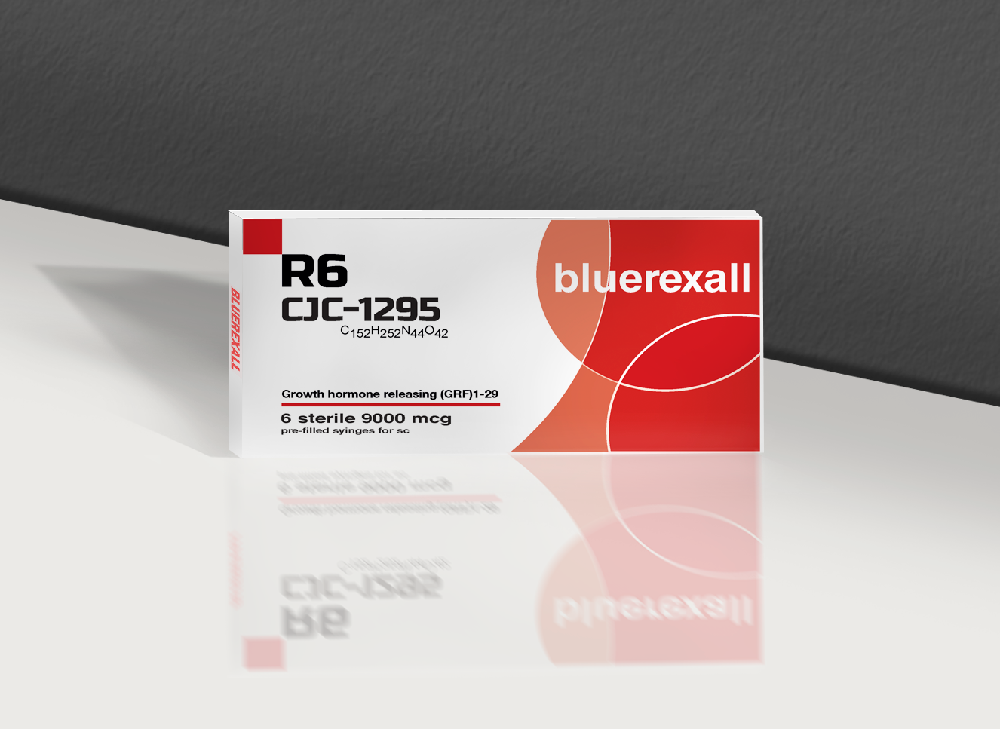
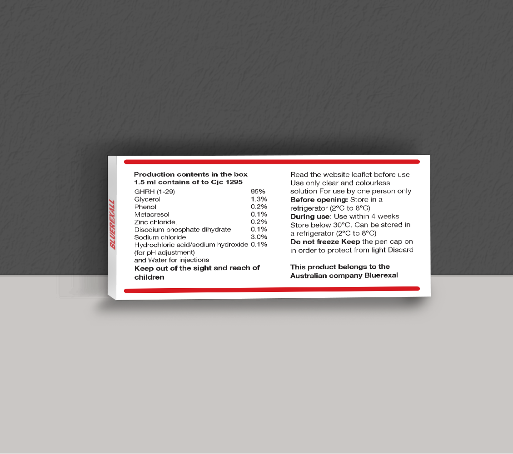
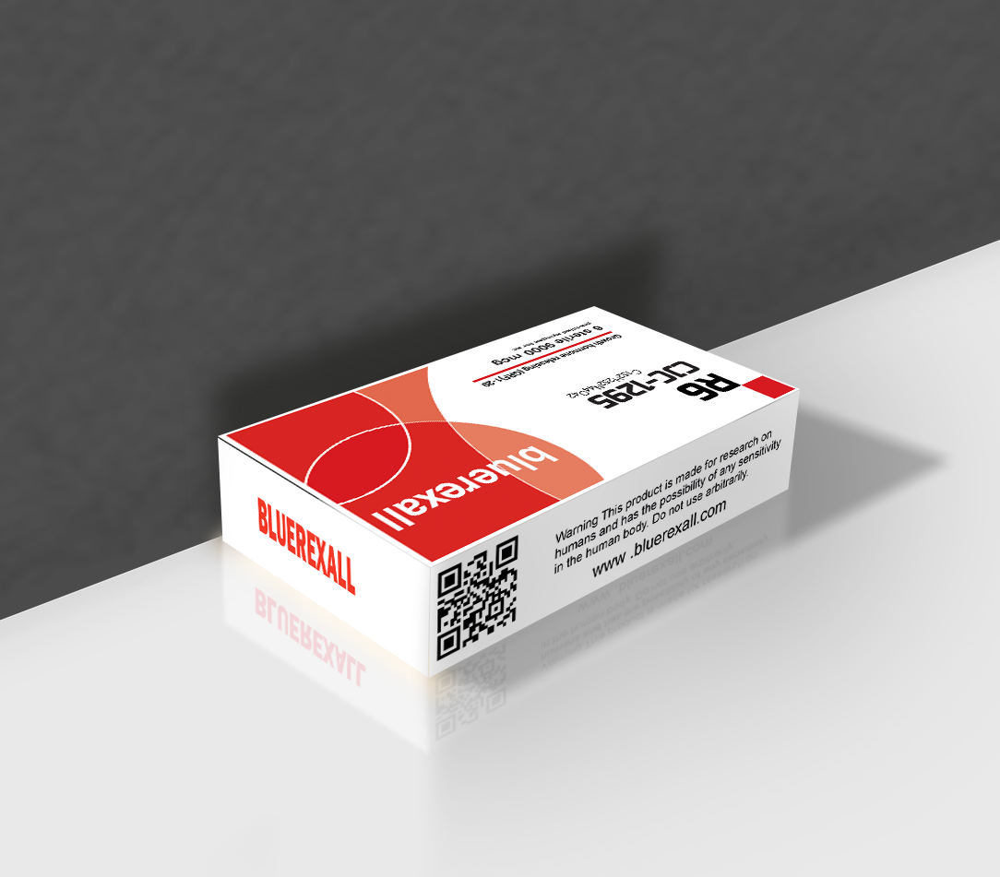

Research Use Only - Biotechnology Peptide



CJC-1295 DAC (Drug Affinity Complex) is a long-acting growth hormone releasing hormone (GHRH) analog that has been extensively studied in scientific research focused on endocrine signaling and growth hormone regulation. Its structure allows for extended binding to serum albumin, resulting in a significantly prolonged half-life compared to non-modified analogs.
In laboratory research, CJC-1295 DAC is primarily used to investigate the mechanisms of growth hormone secretion and pituitary function. It helps researchers better understand how GHRH pathways influence downstream IGF-1 production and overall hormonal balance.
Due to its extended duration of action, CJC-1295 DAC is frequently utilized in controlled experimental models to observe sustained hormonal responses over time. This makes it particularly useful in studies examining long-term endocrine regulation and metabolic signaling pathways.
It is important to emphasize that CJC-1295 DAC is strictly intended for laboratory and research purposes only. It is not approved for human consumption, medical treatment, or any therapeutic applications outside of regulated scientific environments.
Overall, CJC-1295 DAC remains a valuable research compound in the field of molecular endocrinology, providing insight into growth hormone regulation and peptide-based signaling mechanisms.